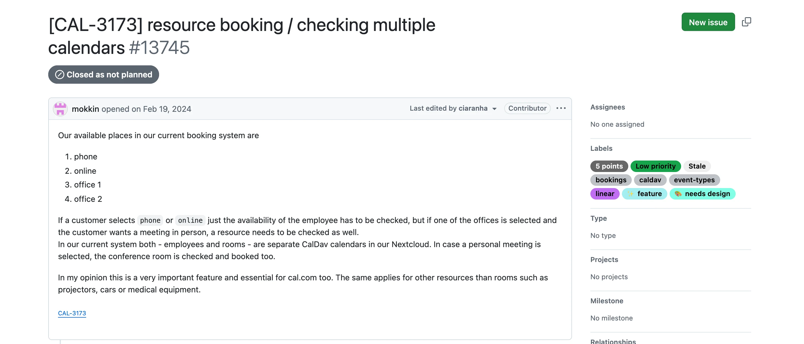
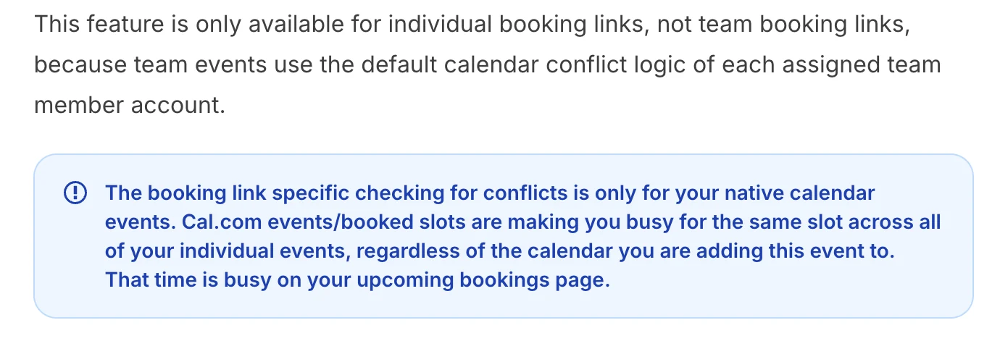
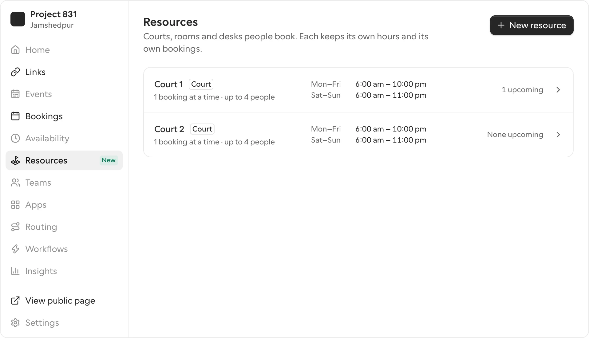
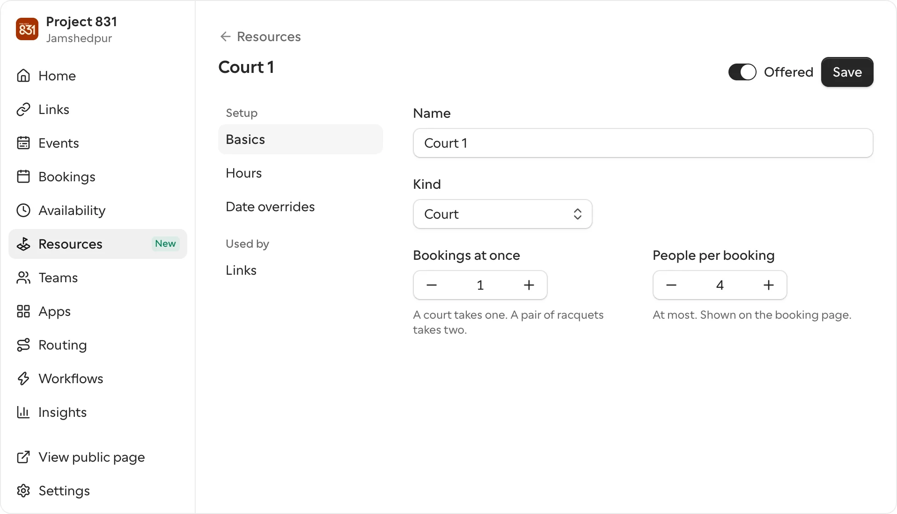
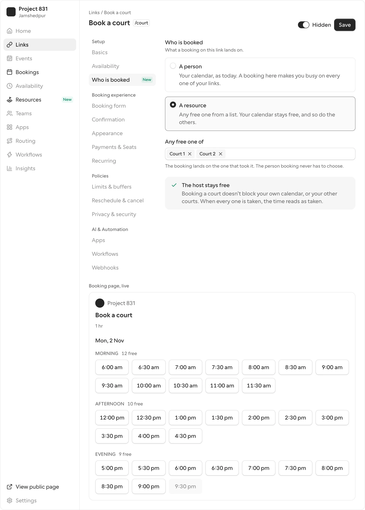
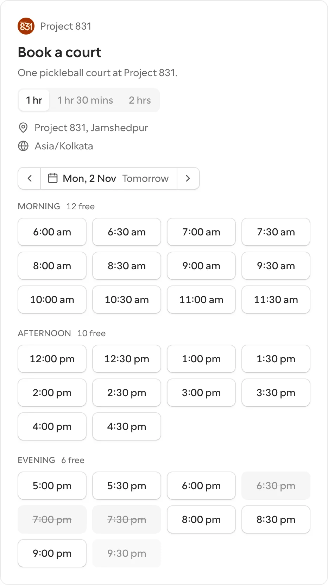
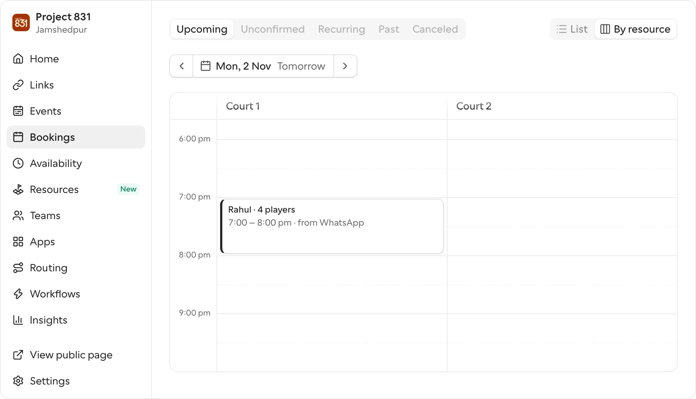
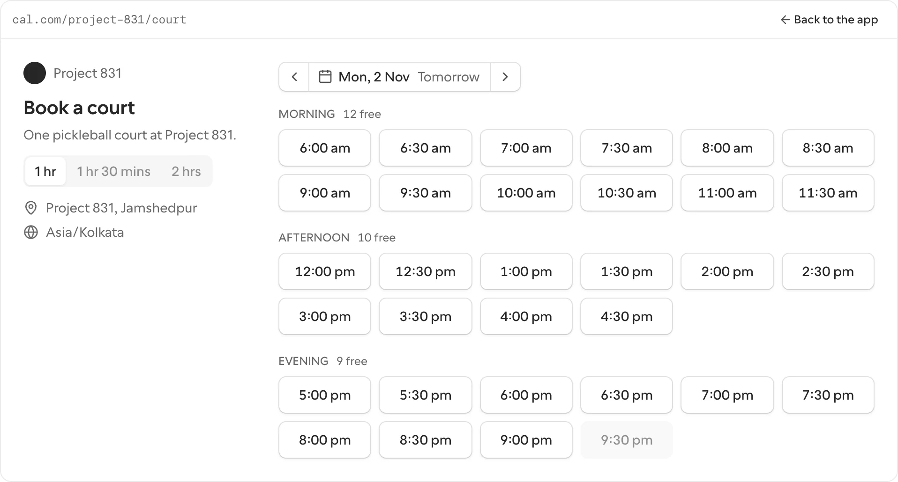

Resources: book the court, not the person.
Three years of people asking Cal.com to book a room, a table, a court or a racquet, each sent away with a workaround. I hit the same wall building a WhatsApp agent on Cal.com’s API for my own venue. So I built the missing piece in Cal.com’s own components. It is working, further down.
Three years of the same request, each answered with a workaround
Cal.com schedules people. The people asking it to schedule things have been told to make a user per room, a booking page per court, or to try Seats. Every line below is quoted from Cal.com’s public tracker and blog, with its date and number.
- May 2023
#9156A coworking space: tables and meeting roomsBest would be possible if people could reserve upfront with some payment deposit?
Cal.com: “we will likely focus on booking humans for the next couple months.” Closed. People were still asking on the thread in 2026. - Feb 2024
#13745Rooms, projectors, cars, medical equipmentIn my opinion this is a very important feature and essential for cal.com too.
Cal.com: labelled “needs design”; “something we’re likely to do at some stage… there’s likely a decent amount of complexity to it”; rooms as team members, “a bit hacky”. Closed as not planned. - Oct 2025
#24724A racquet-hire shop with two racquetsThis would make availability context-dependent rather than global.
Cal.com: “Would this be similar to Seats?” Seats lock every booking to the same start and end, the author replied. Still open, awaiting approval. - Sep 2026
the blog“8 Best Court Scheduling Software”, Cal.com firstCreate a separate booking page for each court, sport, or session type.
The product’s answer is the workaround, written up as the feature.

One account, two courts: book one and both look taken
Project 831 is the two-court pickleball venue I co-founded in Jamshedpur. On 1 November I put a WhatsApp agent in front of its two courts, each set up as its own link on my Cal.com account. The first booking, Court 1 at 7 pm, made Court 2 busy too. Every booking belongs to its host, and the host is busy for all their links at once.
“Cal.com events/booked slots are making you busy for the same slot across all of your individual events.”
Cal.com help, Link Specific Checking for Conflicts. The setting that sounds like the fix only picks which calendars are checked.
The agent keeps the courts itself now: it reads each court’s bookings, works out which one is free, and books with Cal.com’s conflict check turned off for that one call. It works. Every venue on Cal.com would have to write the same thing, or make a user per court.
Build it in Cal.com’s own components, not draw it
A drawing is an opinion. A working thing in coss ui, Cal.com’s own library, with every state, the keyboard, dark mode and right-to-left, is a pull request waiting for a data model. So the proposal is a prototype you can click, documented the way coss documents a component: preview and code, the API read from the type, the states, the keys.
A resource has hours, a capacity and its own bookings
Resources sits beside Availability, on any account. A link says who is booked: a person, as today, or any free one of a list of resources. The host’s calendar stays free. Bookings get a view by resource. The data is Project 831’s real hours and the booking the agent made.






I weighed three framings and built the one that works for one account
Each reuses something Cal.com has. Only one of them works for the venues that keep asking, which are mostly one person with a few things.
A · Make a court a team member
B · Resources, a page of its own
C · Mark a schedule as a thing
One change: slots say which resource is free
The agent needs to ask which resource is free and book that one. The workaround it carries today, keeping the courts itself and booking past the conflict, goes. Every venue on Cal.com gets the same without writing an agent.
- What it would take in cal.comestimateA Resource table with a schedule and a capacity; a resource list on an event type; the slots service counting a resource’s own bookings instead of the host’s; a resourceId on Booking; one page and one view in the app. An estimate from the outside, from reading Cal.com’s public code.
- What it doesn’t touchTeams, round robin, seats, payments, workflows. On a team link the resource list sits where Assignment is; on a personal link it is the new page.
- What the prototype already holdsThe model as pure functions with their own tests: when a resource is free, which free one a booking lands on, and a day of slots two ways, as Cal.com sees it today and with resources, so the wall and the fix sit side by side.
If Cal.com shipped it, three numbers would say whether it was right
- Links switched from “a person” to “a resource”In the first month. This is the request the three issues stood for; the switch is the vote.
- Starts refused because every resource was takenCounted on the booking page. That is demand the venue couldn’t serve, and the place a waitlist earns its keep.
- Bookings landed by the APIWith a resourceId, by clients like the agent, which stop keeping the courts themselves the day this ships.
I design products, build them, and measure what they move
Before this I recorded sound for films. Now I run the numbers on what I ship: at Project 831, self-serve bookings went from 15% in May to 74% in September 2026; at Travelopia, ten brand teams use a design-system tool I made. I’d like to do this at Cal.com.